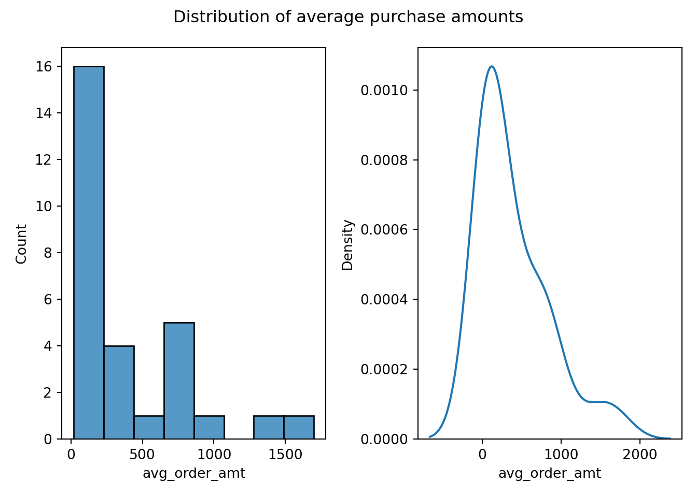
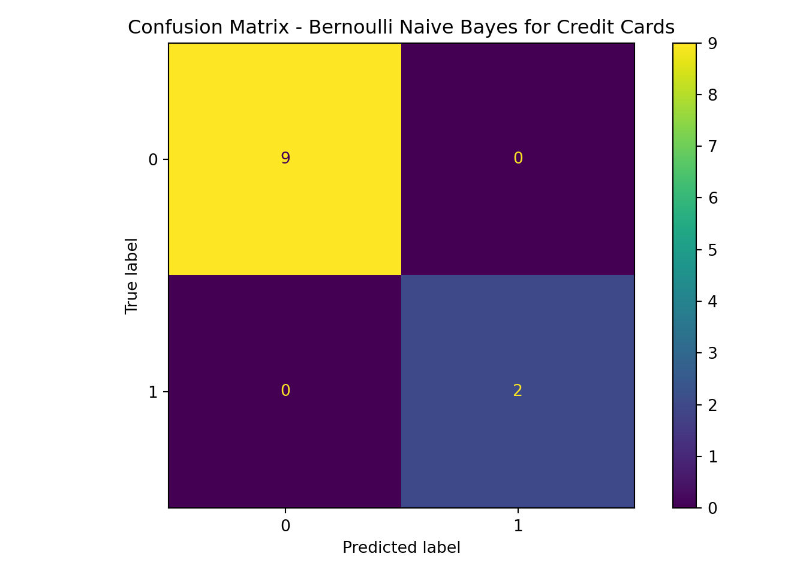
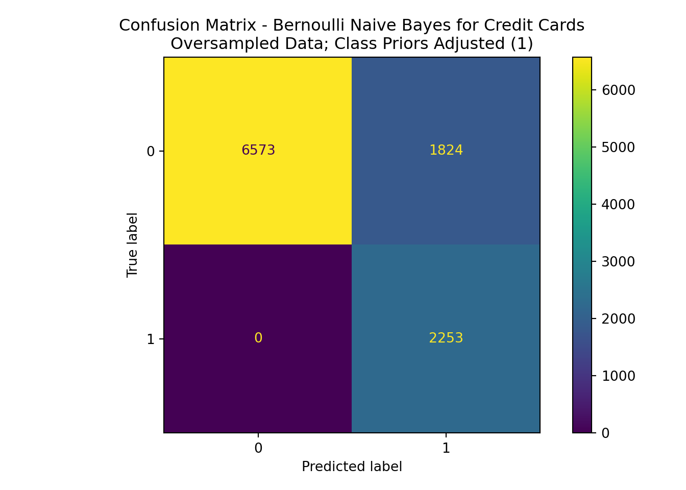

from sklearn.preprocessing import (
OneHotEncoder, OrdinalEncoder,
)
from sklearn.naive_bayes import BernoulliNB
from sklearn.model_selection import train_test_split
import pandas as pd, numpy as np
import json, matplotlib.pyplot as plt, seaborn as snsQuestion 4 - The Problem
Suppose you work for Amazon and they have asked you to (1) determine if a User should get a credit card (yes or no), and (2) determine which products to advertise to the User.
Imagine that you have any/all of Amazon’s User data – anything you need.
Design/create a small dataset that you can use to address the questions above. Paste it here. Keep it small with 3 – 4 columns and 25 – 30 rows. You decide the column/variable names and what the data would look like. It can be anything you want that also makes sense with respect to the question. You create the dataset you need.
Next, describe, illustrate, and perform (in Python or R) whatever you think you need to do so that you can address the questions asked properly. The reason why you are not being told what tools/methods/models to use is because on the job – you are the data scientist and you determine what to use, what to do, what the results mean, and how to present it. Please do that here.
- Discuss and illustrate your technical results and non-technical conclusions. YOU decide what is needed to do this.
Data Creation / Generation
cust = pd.read_csv('customer_data.csv')
cust.head() orders_per_week ... needs_cc
0 NaN ... NaN
1 NaN ... NaN
2 NaN ... NaN
3 NaN ... NaN
4 NaN ... NaN
[5 rows x 4 columns]for i, row in cust.iterrows():
cust.at[i,'past_orders'] = json.loads(row['past_orders'].replace("'",'\"'))
cust.loc[i,'total_order_dollars'] = 0
cust.head() orders_per_week ... needs_cc
0 NaN ... NaN
1 NaN ... NaN
2 NaN ... NaN
3 NaN ... NaN
4 NaN ... NaN
[5 rows x 4 columns]trans = []
f = open('./transaction_data.csv','w')
order_count = 0
for i, row in cust.iterrows():
for order in row['past_orders']:
order_count+=1
for item in order:
s = "{},{}\n".format(order_count,item) #str(order_count)+','.join(item)+'\n'
f.write(s)f.close()data = pd.DataFrame({
'label':[],
'num_purchases':[],
'total_purchase_value':[],
'item_categories':[],
'transactions':[],
#'num_purchased_items':[]
})
items = {
'electronics':['computer','mouse','keyboard','headphones','watch','router','power cable','printer'],
'office_supplies':['stapler','printer paper','pens','pencils','highlighter','notepad'],
'food':['chocolate','coffee','jellybeans','chips','drink mix','coffee creamer',],
'clothing':['dress','t-shirt','shorts','pants','socks','formal shoes','athletic shoes','sandals'],
'furniture':['bed','coffee table','rug','recliner'],
'outdoor':['backpack','hiking poles','fishing pole','folding chair','cooler']
}
np.random.seed(9001)
item_cost_dict = {
'laptop': np.random.normal(1000,100),
'mouse': np.random.normal(35,4),
'keyboard': np.random.normal(57,12),
'headphones': np.random.normal(47,10),
'watch': np.random.normal(150,20),
'router': np.random.normal(200,17),
'power cable': np.random.normal(15,2),
'printer': np.random.normal(300,75),
'stapler': np.random.normal(15,1),
'printer paper': np.random.normal(10,1),
'pens': np.random.normal(5,.5),
'pencils': np.random.normal(3,.25),
'highlighter': np.random.normal(6,.63),
'notepad': np.random.normal(2.5,.25),
'chocolate': np.random.normal(8,2),
'coffee': np.random.normal(12,1.73),
'jellybeans': np.random.normal(3.3,.83),
'chips': np.random.normal(6,.37),
'drink mix': np.random.normal(3.8,.19),
'coffee creamer': np.random.normal(6.7,0.57),
'dress': np.random.normal(50,0.329),
't-shirt': np.random.normal(13.27,2.05),
'shorts': np.random.normal(20.99,2.28),
'pants': np.random.normal(27.99,3.4),
'socks': np.random.normal(11.99,1.03),
'formal shoes': np.random.normal(64.25,12),
'athletic shoes': np.random.normal(84.99,7.25),
'sandals': np.random.normal(15.99,1.99),
'bed': np.random.normal(1500,175.25),
'coffee table': np.random.normal(150,16.97),
'rug': np.random.normal(227,22),
'recliner': np.random.normal(1299.99,93),
'backpack': np.random.normal(38,3),
'hiking poles': np.random.normal(55,2.99),
'fishing rod': np.random.normal(175.99,8.25),
'folding chair': np.random.normal(42,10),
'cooler': np.random.normal(75,8),
'beef jerky':np.random.normal(17.50,2.5),
'candy bar':np.random.normal(3.42,0.17),
'potato chips':np.random.normal(6.83,1.1),
'bed sheets':np.random.normal(27.95,3.33),
'dog treats':np.random.normal(18.43,2.25)
}
cust['num_orders'] = 0
for i, row in cust.iterrows():
cust.loc[i,'num_orders'] =len(row['past_orders'])
for order in row['past_orders']:
for item in order:
price = item_cost_dict[item]
cust.loc[i,'total_order_dollars'] = cust.loc[i,'total_order_dollars'] + price
cust['avg_order_amt'] = cust['total_order_dollars'] / cust['num_orders']
cust['needs_cc'] = np.select([cust['avg_order_amt'] > 785.53],[True],default=False)
cust.drop(columns=['orders_per_week','avg_order_amt'],inplace=True)
cust.to_csv('./Exam4Data.csv',index=False)Data Visualization
cust['avg_order_amt'] = cust['total_order_dollars']/cust['num_orders']
fig,ax = plt.subplots(nrows=1,ncols=2)
sns.histplot(data=cust,x='avg_order_amt',binwidth=200,ax=ax[0])
sns.kdeplot(data=cust,x='avg_order_amt',ax=ax[1])
fig.suptitle("Distribution of average purchase amounts")
plt.tight_layout()
plt.show()
cust['avg_order_amt'].describe()count 29.000000
mean 388.113078
std 446.915431
min 19.652671
25% 60.600038
50% 196.383526
75% 700.882110
max 1699.051076
Name: avg_order_amt, dtype: float64People are spending money! Most of our average purchasers fall under the $1000 water mark. Going beyond $1000 can be costly. The users who make larger purchases on average may be more viable customers to whom we could advertise credit. Especially if they’re buying more costly items in the electronics, furniture, or other departments. The median purchase price of $785.43 highlights this as well, a bit more clearly than the histogram.
Let’s go ahead and say that those people do need credit cards. I’ll label the data accordingly and see if we can model of of it.
cust['needs_cc'] = np.select([cust['avg_order_amt'] > 785.53],[True],default=False)
cust total_order_dollars ... avg_order_amt
0 1166.550665 ... 388.850222
1 785.534105 ... 196.383526
2 2437.854050 ... 812.618017
3 2102.646329 ... 700.882110
4 395.349357 ... 197.674679
5 2871.096197 ... 1435.548099
6 2949.240125 ... 983.080042
7 23.810467 ... 23.810467
8 136.632712 ... 68.316356
9 1715.034888 ... 857.517444
10 1548.782241 ... 774.391120
11 398.109165 ... 398.109165
12 78.436273 ... 78.436273
13 111.514051 ... 111.514051
14 79.804104 ... 39.902052
15 19.652671 ... 19.652671
16 1144.271756 ... 572.135878
17 46.383817 ... 46.383817
18 637.723892 ... 318.861946
19 121.200075 ... 60.600038
20 295.197832 ... 98.399277
21 68.172580 ... 68.172580
22 24.805923 ... 24.805923
23 111.514051 ... 111.514051
24 373.104569 ... 373.104569
25 21.975791 ... 21.975791
26 1474.975529 ... 737.487764
27 1699.051076 ... 1699.051076
28 36.100253 ... 36.100253
[29 rows x 5 columns]We may be able to build a naive bayes model off of this data, examining past orders, and seeing if a new order may necessitate the customer to get a credit card based on what they have in their cart.
from sklearn.naive_bayes import MultinomialNB,CategoricalNB,BernoulliNB
from sklearn.metrics import (
accuracy_score,roc_auc_score,
precision_score, recall_score,
f1_score, confusion_matrix,
ConfusionMatrixDisplay
)
init_data = cust[['past_orders','needs_cc']]
init_data past_orders needs_cc
0 [[candy bar, chocolate, coffee], [laptop, mous... False
1 [[backpack, hiking poles, fishing rod, cooler]... False
2 [[formal shoes, dress, chocolate, coffee, jell... True
3 [[printer paper, printer, stapler, coffee, cho... False
4 [[pens, notepad, dog treats], [printer, printe... False
5 [[laptop, mouse, printer paper, printer, penci... True
6 [[coffee, chocolate], [rug, recliner], [laptop... True
7 [[pens, notepad, power cable]] False
8 [[headphones, power cable], [potato chips, dri... False
9 [[router, laptop, printer, printer paper, mous... True
10 [[pencils, notepad], [rug, recliner]] False
11 [[coffee, chocolate, coffee table, rug]] False
12 [[t-shirt, shorts, sandals, beef jerky, dog tr... False
13 [[athletic shoes, shorts, socks]] False
14 [[potato chips, drink mix], [dress, sandals]] False
15 [[pencils, pens, printer paper, notepad]] False
16 [[coffee, chocolate], [power cable, headphones... False
17 [[t-shirt, shorts, sandals]] False
18 [[coffee table, rug], [dog treats, fishing rod... False
19 [[pencils, pens, notepad], [athletic shoes, sh... False
20 [[cooler, fishing rod, dog treats], [coffee, c... False
21 [[dress, sandals]] False
22 [[coffee, potato chips, jellybeans]] False
23 [[athletic shoes, socks, shorts]] False
24 [[athletic shoes, socks, shorts, cooler, fishi... False
25 [[coffee, chocolate]] False
26 [[laptop, notepad, pens, pencils, power cable,... False
27 [[recliner, coffee table, rug, coffee, chocola... True
28 [[coffee, chocolate, socks, notepad]] False# get the data in format for Bernoulli Naive Bayes
all_items = set()
ords = []
for i,row in init_data.iterrows():
# print(row)
for order in row['past_orders']:
d = {'needs_cc':row['needs_cc']}
for item in order:
all_items.add(item)
d[item] = 1
ords.append(d)
all_items.add('needs_cc')
fr = pd.DataFrame(ords,columns=list(all_items))
fr.fillna(0,inplace=True)
fr.head() formal shoes sandals jellybeans ... socks drink mix hiking poles
0 0.0 0.0 0.0 ... 0.0 0.0 0.0
1 0.0 0.0 0.0 ... 0.0 0.0 0.0
2 0.0 0.0 0.0 ... 0.0 1.0 0.0
3 0.0 0.0 0.0 ... 0.0 0.0 1.0
4 0.0 0.0 0.0 ... 0.0 1.0 0.0
[5 rows x 37 columns]#separate the data from the labels
labels = fr['needs_cc']
fr.drop(columns='needs_cc',inplace=True)#build a train-test-split, fit, predict
bnb = BernoulliNB()
X_train,X_test,y_train,y_test = train_test_split(
fr,
labels,
stratify=labels,
random_state=8808,
test_size=0.2
)
bnb.fit(X_train,y_train)BernoulliNB()In a Jupyter environment, please rerun this cell to show the HTML representation or trust the notebook.
On GitHub, the HTML representation is unable to render, please try loading this page with nbviewer.org.
BernoulliNB()
y_pred = bnb.predict(X_test)
results = pd.DataFrame({
'Model':[],
'Data':[],
'Accuracy':[],
'Precision':[],
'Recall':[],
'F1':[],
'ROC-AUC':[]
})
results.loc[len(results)] = {
'Model':'BernoulliNB',
'Accuracy':accuracy_score(y_test,y_pred),
'Precision':precision_score(y_test,y_pred),
'Recall':recall_score(y_test,y_pred),
'F1':f1_score(y_test,y_pred),
'ROC-AUC':roc_auc_score(y_test,y_pred)
}| Model | Data | Accuracy | Precision | Recall | F1 | ROC-AUC |
|---|---|---|---|---|---|---|
| BernoulliNB | nan | 1.000000 | 1.000000 | 1.000000 | 1.000000 | 1.000000 |
ConfusionMatrixDisplay(
confusion_matrix(
y_pred=y_pred,y_true=y_test
)
).plot()<sklearn.metrics._plot.confusion_matrix.ConfusionMatrixDisplay object at 0x00000254E2163850>plt.title("Confusion Matrix - Bernoulli Naive Bayes for Credit Cards")
plt.tight_layout()
plt.show()
This is a very limited sample for training and testing data, so the model performs absurdly well on the limited information. It has 100% performance for all metrics, and this could be a sign of overfitting from limited data. It would be good to see if an oversampling of this data produces similar, or to gather more records from the actual customer database.
#make copies of all source records so we have more with which to assess.
oversamp = fr.copy()
lab_2 = labels.copy()
for i in range(10):
oversamp = pd.concat([oversamp,oversamp])
lab_2 = pd.concat([lab_2,lab_2])
X_train,X_test,y_train,y_test = train_test_split(
oversamp,
lab_2,
stratify=lab_2,
random_state=8809,
test_size=0.2
)
bnb.fit(X_train,y_train)BernoulliNB()In a Jupyter environment, please rerun this cell to show the HTML representation or trust the notebook.
On GitHub, the HTML representation is unable to render, please try loading this page with nbviewer.org.
BernoulliNB()
y_pred = bnb.predict(X_test)
results = pd.DataFrame({
'Model':[],
'Data':[],
'Accuracy':[],
'Precision':[],
'Recall':[],
'F1':[],
'ROC-AUC':[]
})
results.loc[len(results)] = {
'Model':'BernoulliNB (No Tuning)',
'Data':'Oversampled',
'Accuracy':accuracy_score(y_test,y_pred),
'Precision':precision_score(y_test,y_pred),
'Recall':recall_score(y_test,y_pred),
'F1':f1_score(y_test,y_pred),
'ROC-AUC':roc_auc_score(y_test,y_pred)
}
ConfusionMatrixDisplay(
confusion_matrix(
y_pred=y_pred,y_true=y_test
)
).plot()<sklearn.metrics._plot.confusion_matrix.ConfusionMatrixDisplay object at 0x00000254E2698970>plt.title("Confusion Matrix - Bernoulli Naive Bayes for Credit Cards")
plt.tight_layout()
plt.show()
| Model | Data | Accuracy | Precision | Recall | F1 | ROC-AUC |
|---|---|---|---|---|---|---|
| BernoulliNB (No Tuning) | Oversampled | 0.849108 | 0.605902 | 0.820240 | 0.696964 | 0.838547 |
The oversampling reveals that the model still performs decently well overall with a larger base of records. Of interest and note to the company is the higher prevalence of false positives over false negatives. The model would recommend more often credit cards for people who don’t need them, and would less often make a false prediction that they don’t need a credit card when they actually do.
The model performance metrics decreased with this oversampling, but remained relatively high in the areas where the company is likely to care. Retaining high accuracy means we’ll often make the right recommendation to the right customer. The high recall means we may recommend credit cards to customers that don’t need them.
This points to a need for a greater amount of data to better assess customer purchases. It also points to the method used to add the labels to orders for whether or not a customer needed a credit card; the need for a credit card was based upon customer information, whereas the model has been built from order data. Of the two, a larger representative sample of customer and order information is preferrable.
This method is still relatively effective. Ideally, I think it would be more impactful to decrease false negatives and increase false positives (i.e. recommend credit cards to customers that don’t necessarily need them). This shift may increase our chances of getting more customers to get credit cards whether they need them or not, and also avoid falsely predicting that a customer that needs a credit card doesn’t need one.
I’ll do a quick imbalance on the classification weighting to adjust this.
bnb = BernoulliNB(class_prior=(.55,.45))
bnb.fit(X_train,y_train)BernoulliNB(class_prior=(0.55, 0.45))In a Jupyter environment, please rerun this cell to show the HTML representation or trust the notebook.
On GitHub, the HTML representation is unable to render, please try loading this page with nbviewer.org.
BernoulliNB(class_prior=(0.55, 0.45))
y_pred = bnb.predict(X_test)
results = pd.DataFrame({
'Model':[],
'Data':[],
'Accuracy':[],
'Precision':[],
'Recall':[],
'F1':[],
'ROC-AUC':[]
})
results.loc[len(results)] = {
'Model':'BernoulliNB (Class Priors 0.6 / 0.4)',
'Data':'Oversampled',
'Accuracy':accuracy_score(y_test,y_pred),
'Precision':precision_score(y_test,y_pred),
'Recall':recall_score(y_test,y_pred),
'F1':f1_score(y_test,y_pred),
'ROC-AUC':roc_auc_score(y_test,y_pred)
}
ConfusionMatrixDisplay(
confusion_matrix(
y_pred=y_pred,y_true=y_test
)
).plot()<sklearn.metrics._plot.confusion_matrix.ConfusionMatrixDisplay object at 0x00000254E221B7C0>plt.title("Confusion Matrix - Bernoulli Naive Bayes for Credit Cards\nOversampled Data; Class Priors Adjusted (1)")
plt.tight_layout()
plt.show()
| Model | Data | Accuracy | Precision | Recall | F1 | ROC-AUC |
|---|---|---|---|---|---|---|
| BernoulliNB (Class Priors 0.6 / 0.4) | Oversampled | 0.828732 | 0.552612 | 1.000000 | 0.711848 | 0.891390 |
Of the two models, the first may be more ideal for the company (with no adjustment to prior class probabilities). This adjustment had a better balanced recall vs. precision; while not always making correct predictions, it also does not go in the direction of overrecommendation, or potentially annoying customers with credit card advertisements when they are just routine purchasers for small groups of items and may not need a credit card. Limiting the advertisements to mostly those who need the credit card, along side some who do not, is likely in greater interest to the company. The first oversampling model also has a higher accuracy than the model with adjusted class prior probabilities.
Having additional customer data beyond past orders and average order amounts may be beneficial. This modeling is also based upon a limited number of records and product types. Having a larger sample of customer information, data on who actually gets a credit card from our company, and some other pertinent items could make for more effective models and boost company profits.
Overall - this method can certainly be used to perform further work and make recommendations to customers who may need credit cards.
Purchase Recommendations
To evaluate recommendations for combined purchases, performing association rule mining may be best. This can tell us how likely certain items will be purchased together, based upon historical transaction data.
library(tidyverse)
library(arules)
library(arulesViz)
data <- read.transactions(
'C:/Users/pconn/OneDrive/Desktop/transaction_data.csv',
sep=',',
rm.duplicates=TRUE,
format='single',
cols=c(1,2)
)inspect(data) items transactionID
[1] {candy bar,
chocolate,
coffee} 1
[2] {chocolate,
coffee,
coffee table,
rug} 10
[3] {chocolate,
coffee,
printer,
printer paper,
stapler} 11
[4] {coffee table,
recliner,
rug} 12
[5] {beef jerky,
dog treats} 13
[6] {dog treats,
notepad,
pens} 14
[7] {power cable,
printer,
printer paper} 15
[8] {laptop,
mouse,
notepad,
pencils,
printer,
printer paper} 16
[9] {coffee table,
power cable,
recliner} 17
[10] {chocolate,
coffee} 18
[11] {recliner,
rug} 19
[12] {headphones,
laptop,
mouse,
notepad,
pens} 2
[13] {laptop,
power cable,
printer} 20
[14] {notepad,
pens,
power cable} 21
[15] {headphones,
power cable} 22
[16] {dog treats,
drink mix,
potato chips,
sandals,
shorts,
t-shirt} 23
[17] {headphones,
laptop,
mouse,
power cable,
printer,
printer paper,
router} 24
[18] {chocolate,
coffee} 25
[19] {notepad,
pencils} 26
[20] {recliner,
rug} 27
[21] {chocolate,
coffee,
coffee table,
rug} 28
[22] {beef jerky,
dog treats,
sandals,
shorts,
t-shirt} 29
[23] {drink mix,
potato chips,
power cable} 3
[24] {athletic shoes,
shorts,
socks} 30
[25] {drink mix,
potato chips} 31
[26] {dress,
sandals} 32
[27] {notepad,
pencils,
pens,
printer paper} 33
[28] {chocolate,
coffee} 34
[29] {headphones,
laptop,
mouse,
power cable} 35
[30] {sandals,
shorts,
t-shirt} 36
[31] {coffee table,
rug} 37
[32] {cooler,
dog treats,
fishing rod} 38
[33] {notepad,
pencils,
pens} 39
[34] {backpack,
cooler,
fishing rod,
hiking poles} 4
[35] {athletic shoes,
shorts,
socks} 40
[36] {cooler,
dog treats,
fishing rod} 41
[37] {chocolate,
coffee} 42
[38] {drink mix,
potato chips} 43
[39] {dress,
sandals} 44
[40] {coffee,
jellybeans,
potato chips} 45
[41] {athletic shoes,
shorts,
socks} 46
[42] {athletic shoes,
cooler,
dog treats,
fishing rod,
shorts,
socks} 47
[43] {chocolate,
coffee} 48
[44] {laptop,
notepad,
pencils,
pens,
power cable,
printer,
printer paper} 49
[45] {chocolate,
coffee,
drink mix,
potato chips} 5
[46] {dress,
jellybeans,
sandals} 50
[47] {chocolate,
coffee,
coffee table,
recliner,
rug} 51
[48] {chocolate,
coffee,
notepad,
socks} 52
[49] {notepad,
pens,
printer,
printer paper} 6
[50] {sandals,
shorts,
t-shirt} 7
[51] {chocolate,
coffee,
dress,
formal shoes,
jellybeans} 8
[52] {bed,
bed sheets,
chips,
drink mix} 9 a_rules <- arules::apriori(
data,
control=list(verbose=F),
parameter=list(support=0.07,confidence=0.07,minlen=2)
)
arules::inspect(a_rules) lhs rhs support confidence
[1] {athletic shoes} => {socks} 0.07692308 1.0000000
[2] {socks} => {athletic shoes} 0.07692308 0.8000000
[3] {athletic shoes} => {shorts} 0.07692308 1.0000000
[4] {shorts} => {athletic shoes} 0.07692308 0.5000000
[5] {recliner} => {rug} 0.07692308 0.8000000
[6] {rug} => {recliner} 0.07692308 0.5714286
[7] {cooler} => {fishing rod} 0.07692308 1.0000000
[8] {fishing rod} => {cooler} 0.07692308 1.0000000
[9] {t-shirt} => {sandals} 0.07692308 1.0000000
[10] {sandals} => {t-shirt} 0.07692308 0.5714286
[11] {t-shirt} => {shorts} 0.07692308 1.0000000
[12] {shorts} => {t-shirt} 0.07692308 0.5000000
[13] {socks} => {shorts} 0.07692308 0.8000000
[14] {shorts} => {socks} 0.07692308 0.5000000
[15] {potato chips} => {drink mix} 0.09615385 0.8333333
[16] {drink mix} => {potato chips} 0.09615385 0.8333333
[17] {coffee table} => {rug} 0.09615385 0.8333333
[18] {rug} => {coffee table} 0.09615385 0.7142857
[19] {mouse} => {laptop} 0.07692308 1.0000000
[20] {laptop} => {mouse} 0.07692308 0.6666667
[21] {pencils} => {notepad} 0.09615385 1.0000000
[22] {notepad} => {pencils} 0.09615385 0.5000000
[23] {sandals} => {shorts} 0.07692308 0.5714286
[24] {shorts} => {sandals} 0.07692308 0.5000000
[25] {pens} => {notepad} 0.13461538 1.0000000
[26] {notepad} => {pens} 0.13461538 0.7000000
[27] {laptop} => {power cable} 0.07692308 0.6666667
[28] {power cable} => {laptop} 0.07692308 0.4444444
[29] {laptop} => {printer} 0.07692308 0.6666667
[30] {printer} => {laptop} 0.07692308 0.5714286
[31] {power cable} => {printer} 0.07692308 0.4444444
[32] {printer} => {power cable} 0.07692308 0.5714286
[33] {printer} => {printer paper} 0.11538462 0.8571429
[34] {printer paper} => {printer} 0.11538462 0.8571429
[35] {printer paper} => {notepad} 0.07692308 0.5714286
[36] {notepad} => {printer paper} 0.07692308 0.4000000
[37] {chocolate} => {coffee} 0.25000000 1.0000000
[38] {coffee} => {chocolate} 0.25000000 0.9285714
[39] {athletic shoes, socks} => {shorts} 0.07692308 1.0000000
[40] {athletic shoes, shorts} => {socks} 0.07692308 1.0000000
[41] {shorts, socks} => {athletic shoes} 0.07692308 1.0000000
[42] {sandals, t-shirt} => {shorts} 0.07692308 1.0000000
[43] {shorts, t-shirt} => {sandals} 0.07692308 1.0000000
[44] {sandals, shorts} => {t-shirt} 0.07692308 1.0000000
coverage lift count
[1] 0.07692308 10.400000 4
[2] 0.09615385 10.400000 4
[3] 0.07692308 6.500000 4
[4] 0.15384615 6.500000 4
[5] 0.09615385 5.942857 4
[6] 0.13461538 5.942857 4
[7] 0.07692308 13.000000 4
[8] 0.07692308 13.000000 4
[9] 0.07692308 7.428571 4
[10] 0.13461538 7.428571 4
[11] 0.07692308 6.500000 4
[12] 0.15384615 6.500000 4
[13] 0.09615385 5.200000 4
[14] 0.15384615 5.200000 4
[15] 0.11538462 7.222222 5
[16] 0.11538462 7.222222 5
[17] 0.11538462 6.190476 5
[18] 0.13461538 6.190476 5
[19] 0.07692308 8.666667 4
[20] 0.11538462 8.666667 4
[21] 0.09615385 5.200000 5
[22] 0.19230769 5.200000 5
[23] 0.13461538 3.714286 4
[24] 0.15384615 3.714286 4
[25] 0.13461538 5.200000 7
[26] 0.19230769 5.200000 7
[27] 0.11538462 3.851852 4
[28] 0.17307692 3.851852 4
[29] 0.11538462 4.952381 4
[30] 0.13461538 4.952381 4
[31] 0.17307692 3.301587 4
[32] 0.13461538 3.301587 4
[33] 0.13461538 6.367347 6
[34] 0.13461538 6.367347 6
[35] 0.13461538 2.971429 4
[36] 0.19230769 2.971429 4
[37] 0.25000000 3.714286 13
[38] 0.26923077 3.714286 13
[39] 0.07692308 6.500000 4
[40] 0.07692308 10.400000 4
[41] 0.07692308 13.000000 4
[42] 0.07692308 6.500000 4
[43] 0.07692308 7.428571 4
[44] 0.07692308 13.000000 4 sorted_arules <- sort(a_rules,by='lift',decreasing = T)
# arules::inspect(sorted_arules[1:25])
sub <- head(sort(a_rules,by='lift',decreasing = T),15)
plot(sub,method="graph",engine="html")Examining the above list/table, along side the visual graph - it seems like there a good number of associated products with relatively high lift. This means that the association is stronger and more useful to us - having a customer place one of the items on the left hand side (lhs) greatly increases the likelihood that they’ll also place the item(s) on the right hand side(rhs) into their basket as well. The support (relative frequency) for this generated association list was set to 7%, meaning that the combination of items had to occur in at least 7% of transactions. The same setting was used for confidence, a relative measure of how frequently the combination occurs together vs. the individual items themselves across the transaction list.
It looks like summer may be coming a bit early! Customers are stocking up on some summer necessitites - clothing like shorts, tshirts, sandals, socks, and athletic shoes all seem to be going together. Some customers are also getting potato chips and drink mix - so going outside and enjoying oneself is in.
Shorts seem to be at the center of a lot of combined purchases. Any time someone looks into shorts, we should probably recommend that they look at socks and athletic shoes (or t-shirts and sandals). The converse is true for that, too - if someone’s looking at sandals, we might recommend tshirts and shorts. We may also recommend shorts and socks if they’re looking into athletic shoes.
Really a no-brainer, but there are some purchases of laptops going on right now, and they have a strong connection to computer mouses. We should continue to recommend peripherals to users that are browsing for laptops.
Overall - by examining what customers are purchasing, and having more information on them, we should be able to take, apply, expand, and improve these methods so that predictive models can give us better results - more purchases of related items, and more customers with credit cards from our company.